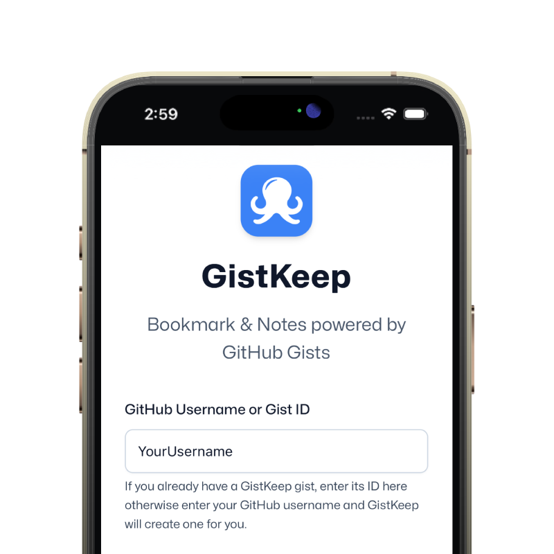
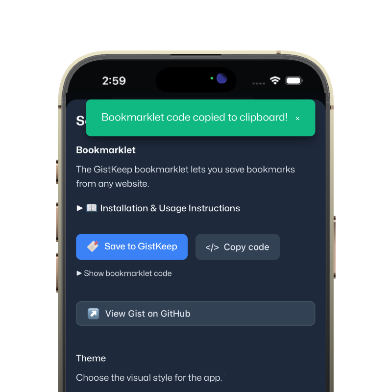
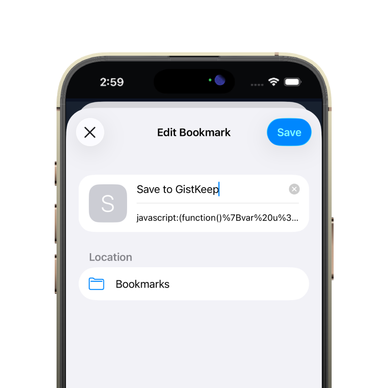
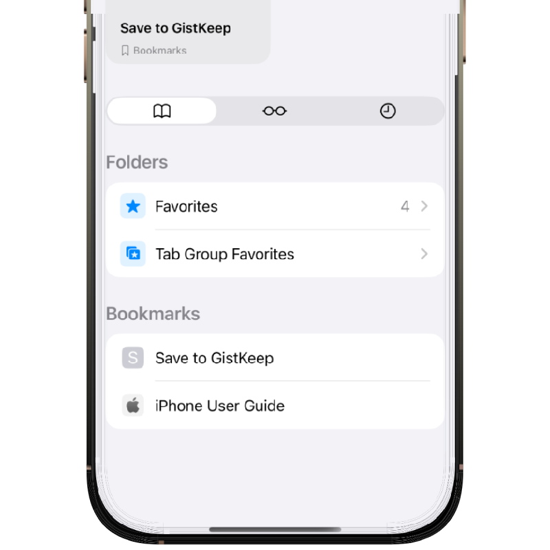

Set Github Settings
Enter your Github Username and Token to setup GistKeep.

GistKeep is an open source, fully client-side bookmark and notes manager that uses Github Gist as it's backend and database. Your library lives in Markdown, which means it is portable, inspectable, versioned, shareable, and easy to back up.
Enter your Github Username and Token to setup GistKeep.

Copy the bookmarklet code or drag the link to save.

Save the bookmarklet into your browser for later use.

Use the web app or bookmarklet to capture links.

GitHub gists can be unlisted rather than truly private. That means anyone with the link can access the gist. This is a feature for easy sharing, but it is not a security boundary. It should be treated more like a hard-to-guess URL than a private vault. If the contents matter, use encryption instead of assuming obscurity is enough.
A shared gist gives you collaborative distribution, comments, and version control. The same mechanism means you should treat the link itself as sensitive if the bookmarks matter. This tradeoff is part of what makes gist-backed storage convenient, but it also means sharing is not something to do casually. Think about whether a given library is meant to be public, semi-private, or strictly personal.
GistKeep can use AES encryption content for users who want better privacy. If you need actual confidentiality, that is the safer path than relying on an unlisted gist URL. It is the right choice when your notes contain personal or sensitive material. The tradeoff is that encrypted content is less convenient to inspect directly outside the app.
GistKeep rewrites its managed files when you save changes. That works well for normal personal collections, but large bookmark libraries will get slower over time. This is a deliberate tradeoff in exchange for a simple, inspectable storage model. If you expect tens of thousands of items or constant heavy writes, a more traditional database-backed tool will be a better fit.